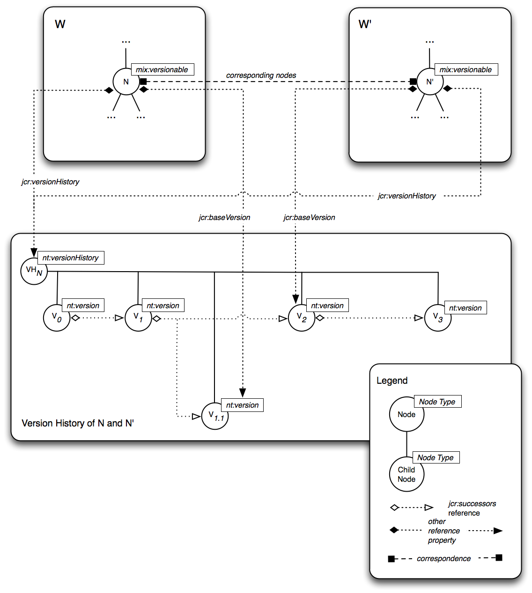

The above diagram depicts the main elements of the simple versioning model. Unlike under full versioning, the connections from the versionable node to the version history and the base version are not mediated by reference properties but through API methods only. As well, the version history and its contained versions are represented only by Java object instances (of classes VersionHistory and Version, respectively) not by nodes. Finally, as the diagram indicates, under simple versioning the version history is always linear and the VERSION on-parent-version setting and associated structures are not supported.
